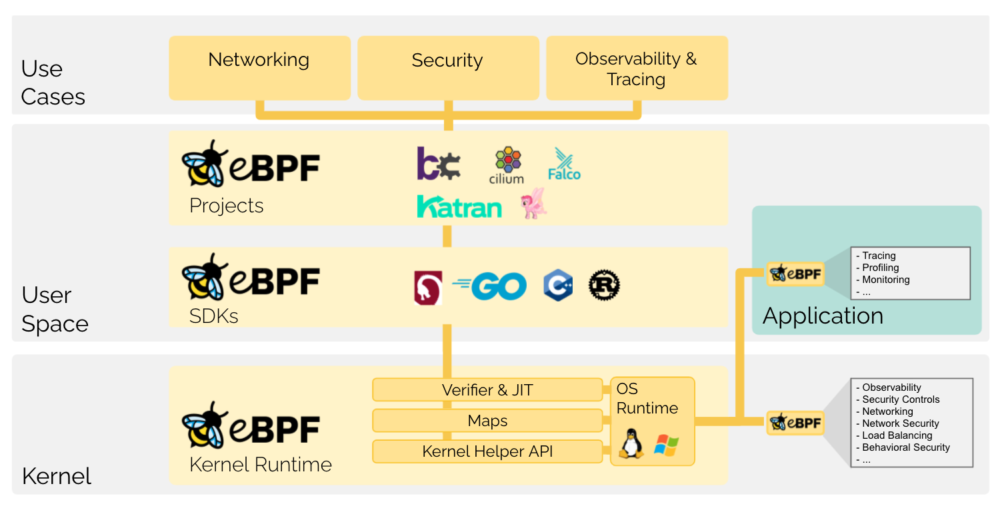
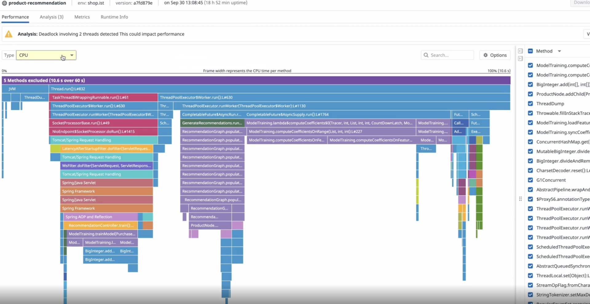

- 00 开篇词 可观测性，让开发和维护系统的你每晚都能睡个好觉！.md.html
- 01 以史鉴今：监控是如何一步步发展而来的？.md.html
- 02 基本概念：指标+日志+链路追踪=可观测性？.md.html
- 03 相互对比：可观测性和传统监控有什么区别？.md.html
- 04 OpenTelemetry：如何利用OpenTelemetry采集可观测数据？.md.html
- 05 构建可观测平台：应该购买商业产品还是自己搭建？.md.html
- 06 团队合作：不同团队如何高效共建可观测性？.md.html
- 07 软件开发：如何利用可观测性进行驱动？.md.html
- 08 建立 SLO：如何为系统可靠性的量化提供依据？.md.html
- 09 跟踪 SLO：如何基于错误预算采取行动？.md.html
- 10 实战 1：从 0 到 1 建立系统应用的可观测性.md.html
- 11 实战 2：基于可观测性数据进行问题分析和根因定位.md.html
- 12 实战 3：构建基于 Kubernetes 的系统可观测性.md.html
- 13 实战 4：建立软件持续集成和发布的可观测性.md.html
- 14 文化建设：如何构建可观测性的文化和框架_.md.html
- 15 展望未来：可观测性在未来的发展趋势是什么？.md.html
- 结束语 在实践中，用科学的方法分析和解决问题.md.html
- 捐赠
15 展望未来：可观测性在未来的发展趋势是什么？
你好，我是翁一磊。
一转眼，这门课程已经上线一个多月的时间了。从今年（2022 年）各种技术在线直播的趋势来看，可观测性这个话题确实是越来越火热，各个厂商和社区都在热烈地讨论这个话题。而这门课程设立的初衷，也是希望能够系统地介绍可观测性的概念、相关的知识体系，以及如何利用可观测性确保生产环境的可靠性。
学到这里，相信你已经能够比较深刻地理解可观测性了。可观测性并不是某一种工具所能提供的某种单一能力，它最终的目标是帮助我们随时理解软件系统的状态，无论这种状态我们之前有没有遇到过。
然而，可观测性这个技术仍然在如火如荼地发展。就像我在第 1 讲中提到的，Gartner 在今年的基础设施和运维自动化技术成熟度周期图里，把“可观测性”放在膨胀期波峰最顶端的位置，他们还预测在未来的几年里，可观测性将逐渐进入技术成熟期。所以，我也希望你可以继续对这一技术保持关注。
我也从个人角度列出了几个方向，它们虽然并不是新鲜的概念，但我认为它们将在可观测性领域持续发展。
用户访问监测 RUM
当下，我们的产品和服务越来越多地以手机 App、小程序、网页等方式呈现给用户，用户使用各种客户端的时间越来越长。努力赚取用户注意力的应用越来越多，产品与服务的更新也越来越频繁。
在这样的大环境下，详细了解用户从哪里来，看了哪些页面，停留多长时间，访问速度是否够快，在哪里会遇到报错等等这些问题，不仅有利于挖掘每一个用户行为背后的真实需求，稳定并提升现存流量的转化率，还能反哺产品与服务，促进它们的双重优化，真正实现用户增长和业绩提升。
因此，采集用户访问数据（英文缩写 RUM）也变得越来越重要，我们需要快速查看和分析各类应用的用户浏览行为及应用相关的性能指标，衡量网站及应用的的最终用户体验效果。
而在建立实际服务可用性时，我们也需要通过 RUM来分析、解决可能会影响用户体验的前端性能问题，确定加载时间缓慢的根本原因（无论是代码、网络还是基础架构的问题）；排除和解决前端错误，通过将问题的根本原因精确到代码行来解决 JavaScript 错误；甚至是分析产品使用情况，在用户会话期间自动收集和关联每个资源、错误和用户操作，按浏览器、城市或者其他自定义维度来分析你的移动和 Web 应用程序的使用情况，了解可视化的用户体验。
我在前面的实战课中，还给你介绍过 RUM 的数据接入、问题分析，以及与后端的关联。不过要注意的是，我们的产品和服务，都是提供给最终用户使用的，只有最终用户满意了，我们的业务才能更好地发展，因此前端用户的体验至关重要。所以，希望你不仅仅关注基础设施和后端服务的层面，还可以多从前端和实际用户的角度出发，更好地建立全面的可观测性。
eBPF
eBPF是一个英文缩写，它的全称是“扩展的伯克利数据包过滤器（Extended Berkeley Packet Filter）” 。eBPF是一种数据包过滤技术，它是从 BPF （Berkeley Packet Filter）技术扩展而来的。
从这个名字本身来看，你可能看不到多少信息量。你真正需要了解的是，eBPF 起源于 Linux 内核，可以在操作系统内核中运行沙盒程序。它用于安全有效地扩展内核的功能，而无需更改内核源代码或加载内核模块。
我们知道操作系统分为用户空间和内核空间，我们编写的应用程序通常是在用户空间中运行的。但是用户空间应用程序能做的事情很有限，需要通过系统调用接口来请求内核帮它做一些事情。例如，每当用户空间中的应用程序需要连接到硬件时，它都是通过调用内核空间中的 API 来实现的。
而 eBPF 的作用，就是允许你编写在操作系统内核中运行的自定义代码。你不再需要编写新的内核模块，只要根据需求动态加载和卸载 eBPF 程序就可以了。允许在操作系统中运行沙盒程序之后，应用程序开发人员可以通过 eBPF 程序向操作系统添加额外的功能。然后，操作系统会保证安全性和执行效率，就像借助即时 (JIT，Just in Time) 编译器和验证引擎一样进行本地编译。
今天，eBPF 被广泛用于驱动各种各样的用例：它可以为现代数据中心和云原生环境中提供高性能网络和负载平衡，以低开销提取细粒度的安全可观测性数据，帮助应用程序开发人员跟踪应用程序，为性能故障排除、容器运行时的安全加强等方面提供洞察能力。下图是 eBPF 的技术概览：

eBPF 安全、灵活、对应用无侵入，这些特点为云原生网络、安全、可观测性领域带来了很多创造性的应用，也引发了一波基于 eBPF 的项目，涵盖了广泛的用例。我在这里列举最常用的一些，如果你感兴趣也可以进一步深挖，了解更多相关信息。
- Cilium 是一个在 eBPF 之上设计的开源项目，用于保护使用 Linux 容器管理平台（如 Docker 和 Kubernetes）部署的应用程序服务之间的网络连接，旨在满足容器工作负载的新的可扩展性、安全性和可见性要求。
- Falco 是 CNCF 酝酿的一个安全工具项目，用来监视安全事件，并在事件发生时发出警报。
- Tracee 是另一个类似 Falco 的项目，但更容易安装和配置，比 Falco 更轻量，缺点是相对还不太成熟。
- eBPF for Windows，这是 2021 年 5 月，Microsoft 发布的新的开源项目 ，目的是让 eBPF 在 Windows 10 和 Windows Server 2016 及更高版本上工作。更多有关 Windows eBPF 的信息可以访问这里。
- 观测云也支持 eBPF 数据采集，它可以采集主机网络 TCP、UDP 连接信息，Bash 执行日志等，详细信息可以参考这里的文档。
Profiling
Profiling 是一种分析程序复杂性的动态方法，例如，它可以分析 CPU 利用率、函数调用的频率和持续时间。这种方法可以帮助我们进一步地分析应用程序的性能，准确定位程序中资源消耗最多的地方。
在有些地方，Profiling 也被叫作 Profile，Profiler，或者是 Continuous Profiling（简称 CP）。这个词还真不好翻译，可以译作剖析，Continuous Profiling 则为持续剖析，但很多时候，我们还是直接使用英文。
通过 Profiling，我们可以分析一段时间内的系统资源调用情况，包括不同类型下代码方法级别的 CPU、内存或 IO 的使用情况，从而定位、调试和修复与性能相关的问题，将 APM 中的每个分布式跟踪与执行请求的方法和线程的性能联系起来，来确定缓慢请求的根本原因。这样，我们能够找到导致高延迟的方法，并通过优化解决服务瓶颈，改善用户体验。
Profiling 也不是一个新鲜的概念，很多云平台和服务厂商都提供持续分析的功能，比如 GCP 的 Cloud Profiler，AWS 的 CodeGuru Profiler，Datadog Continuous Profiler，如下图所示：

Profiling 也有不少不错的开源工具，比如 Pyroscope，它是用Go语言实现的。Pyroscope 提供了丰富的分析的功能，客户端提供Go、Java、Python、Ruby、PHP、.NET等多种语言的支持。
观测云也支持 Profiling，它能够和 APM 的火焰图有效结合，分析不同类型下代码方法级别的 CPU、内存或 IO 的使用情况，帮助你了解方法的执行性能和调用情况，同时提供基于多种维度下的执行数据分析查看，例如方法、库、线程等等，更直观地显示执行占比较大的一些方法，更快地定位性能问题。
OpenTelemetry
我在第 4 讲中介绍过 OpenTelemetry，这是一套可观测性的工具和框架，它可以帮助你实现不被第三方锁定的可观测性。
第三方中立，在很多场景下确实也是非常重要的。因为基于种种原因，例如业务的发展、新工具或产品的差异化特性，我们可能需要对工具进行更换。如果之前是和某个工具紧密绑定，并针对业务的需求进行了手工的插桩，那你首先必须从代码库中删除所有旧的插桩，然后使用一组全新的代码和依赖项重新来一次。如果事实证明新的工具也不理想，那你还得重复一次这个过程。
OpenTelemetry 也在不断发展。我刚开始筹划这个课程的时候，OpenTelemetry 在 Log 也就是日志这块还不太成熟，而现在根据 OpenTelemetry 成熟度模型，日志现在已经到达了 Stable 的阶段。
自 OpenTelemetry 推出以来，也有越来越多的厂商开始关注它并作出一些贡献，例如， opentelemetry-collector-contrib 这里的 OpenTelemetry Collector 组件库。当然，厂商的关注重点还集中在如何将观测数据更加便利地导入到自身的服务中，但这也侧面说明了 OpenTelemetry 的普遍接受度。所以我也推荐你继续关注 OpenTelemetry 的发展和演进。
小结
好了，这节课就讲到这里。在学习了一系列的可观测性知识之后，这一讲，我为你介绍了可观测性在未来值得关注的一些领域。包括前端用户访问（直面最终用户的真实使用情况）、eBPF（对业务和应用无侵入）、Profiling（代码级的问题剖析）、和 OpenTelemetry（不断发展的、避免被第三方工具绑定的可观测性框架）。
可观测性在未来几年仍然会继续发展，希望你能够对这个领域保持关注，更好地保障生产环境的服务可靠性。
课后题
在这节课的最后，还是像往常一样，我留给你一道思考题。
这次是希望你分享一下你对可观测性的心得以及对未来趋势的见解。欢迎你在留言区和我交流讨论。
© 2019 - 2023 Liangliang Lee. Powered by gin and hexo-theme-book.